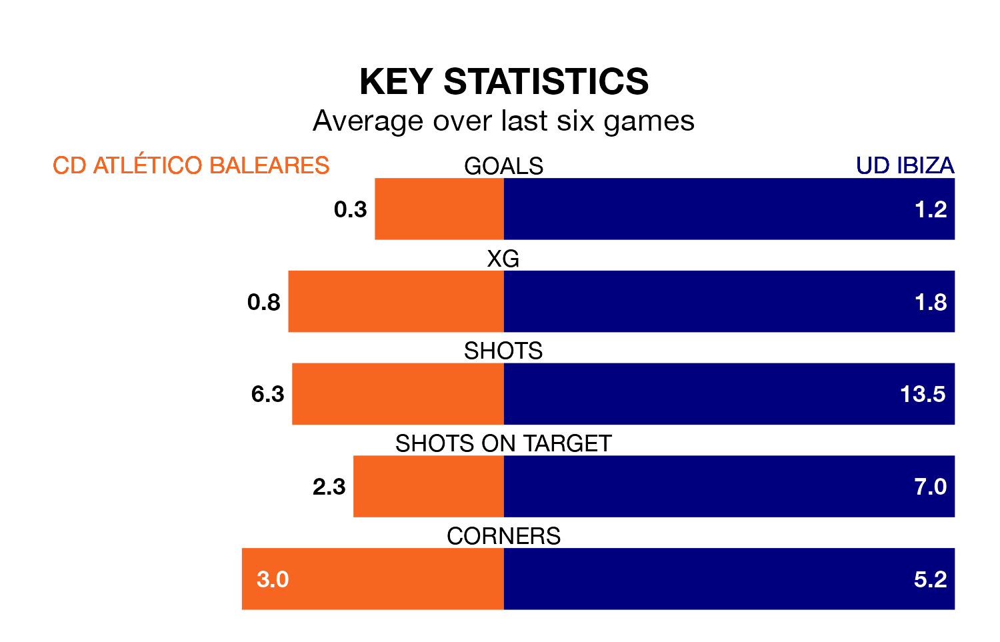

Relegation candidates CD Atlético Baleares face a challenge against high-flying UD Ibiza at Campo de Son Malferit on Sunday.
CD Atlético Baleares are 19th in the Primera Division RFEF Group 2 table, and have picked up five wins and eight draws in their 31 games to date.
Ibiza, meanwhile, are third in the standings with 60 points, having won 17 and drawn nine, and are nine points behind table-toppers CD Castellón.
With 16 goals in 31 games so far this season, Atlético Baleares are the league's lowest scorers with 0.5 goals per game. And they are conceding more than average, letting in 49 goals at a rate of 1.6 per game.
Ibiza, meanwhile, are above average scorers, with 1.6 goals per game, compared to a league average of 1.1. They have conceded 0.9 goals per game.
The hosts are in terrible form in Primera Division RFEF Group 2, with no wins and two draws from their last six games.
With a win and two draws over that period, the away side's form is better – they have taken five points from 18, compared to Atlético Baleares's two.
Ibiza's Alejandro Gallar Falguera is the league's most creative player, racking up seven assists in 20 appearances so far this season.
For Atlético Baleares, David Rodríguez Sánchez, Victor Pastrana Carrasco, Roberto Alarcón González, and David Forniés Aquilino have set up the most goals, having laid on one assist apiece to date.
Atlético Baleares's last match was on April 7, a 0-0 draw against Recreativo de Huelva.
Ibiza beat UD Melilla 4-3 last time out, also on April 7, with Gallar Falguera, Nikolai Obolski, Roberto Arroyo Gregorio and Serge Patrick Njoh Soko on the scoresheet.
Updated: 11:20 (UTC), 09/04/24